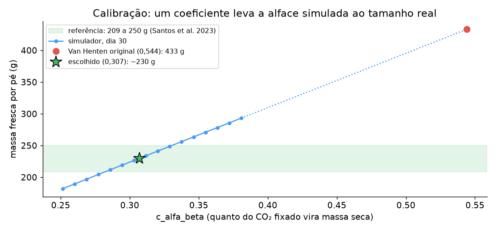

O simulador do ar (Van Henten) e a calibração
A rede aprende o que o simulador deixa. Por isso a estufa virtual usa física publicada, cada número tem fonte, e só um coeficiente foi ajustado, com o motivo registrado.
O que foi feito
- Pacote
simulador/: o modelo de Van Henten (1994) para alface em estufa, em PyTorch. - Vetorizado: N estufas de uma vez. Cada variável é um tensor (uma tabela de números) com uma posição por estufa, e um passo é uma conta só sobre a tabela inteira.
- Passo de 10 min, integrado em 10 sub-passos de 1 min pelo método de Euler.
- Atuadores do Genesis no lugar dos controles originais: exaustor, névoa, tela de sombra e LED.
- Clima ameno sintético com semente, e
ler_sensores()/acionar()com os nomes do contrato. - 10 testes de sanidade.
Por quê
É o modelo mais usado em trabalhos de controle de estufa (MPC e aprendizado por reforço). Tem só 4 estados (massa seca, CO₂, temperatura e umidade) e cabe numa conta vetorizada. Os 34 coeficientes foram conferidos em duas fontes: Morcego et al. (2023) e Svensen et al. (2024).
O modelo diz quanto cada coisa muda por segundo. Integrar é andar 1 min com essa taxa, recalcular e repetir. O termo mais rápido (a troca de ar com o exaustor no máximo) leva ~100 s para acontecer; com 60 s por sub-passo a conta fica estável. Passos grandes demais fariam a conta "explodir".
No estudo a nebulização não tinha efeito colateral e o campeão abusou dela. Aqui a água só evapora se o ar tiver espaço para o vapor: a vazão efetiva é a máxima × (1 − umidade relativa).
O Van Henten original vai só até 0,0075 m³/s por m². No sol daqui isso deixaria a estufa acima de 40 °C mesmo aberta. Com exaustores, a recomendação é 1 troca de ar por minuto: 0,041 m³/s por m² (UF/IFAS).
Os números da adaptação, com fonte
| Item | Valor | Fonte |
|---|---|---|
| Ventilação máxima | 0,041 m³/s/m² | Watson et al., UF/IFAS AE030 (2019) |
| Névoa | 8,9 g/m²/min | Ishii et al. (2016), JARQ |
| Tela de sombra | até 50% | Cometti et al. (2020), Hortic. Bras. |
| LED | 200 µmol/m²/s · 80 W/m² | Both (2003); DLC Hort V4.0 (2,5 µmol/J) |
| Matéria seca da alface | 4,5% | Both (2003); Santos et al. (2023) |
| Pés por m² | 16 (25 × 25 cm) | Santos et al. (2023), Irriga |
| Transmissão da cobertura | 0,7 | sem fonte: estimativa, só afeta o sensor de luz |
O que surpreendeu: a alface grande demais
Com o modelo puro e um termostato simples, a alface chegava a ~435 g por pé no dia 30. A referência brasileira (Santos et al. 2023, NFT) é 209 a 250 g. Isso é esperado: o Van Henten foi ajustado com alface holandesa e pouca luz, e aqui o sol é forte.
Isso importava por causa da nota: a receita do dashboard cresce com a massa só até 242 g por pé. Com o modelo puro, quase qualquer controle ganharia o máximo, e a rede não teria motivo para cuidar do crescimento.
Mudou só o c_alfa_beta (quanto do CO₂ fixado vira massa seca), de 0,544 para 0,307. Os outros 33 ficaram iguais à tese, e o modelo original continua disponível em VanHenten().
Alternativas descartadas: manter o modelo puro (a nota passaria a medir quase só energia); mudar a régua de preço do dashboard (ela representa o mercado, não o modelo).

c_alfa_beta, em 3 climas. A curva cruza a faixa verde da referência; 0,307 dá ~230 g, no meio dela. O ponto vermelho é o modelo original.Resultado com a calibração (dia 30)
| Controle | Massa por pé | Temperatura máxima |
|---|---|---|
| Não fazer nada | 15 g | 50 °C |
| Termostato simples | 219 a 232 g (3 climas) | ~29 °C |
Com a estufa fechada, ela vira um forno e a alface consome o CO₂ do ar até quase parar de crescer. É o que acontece numa estufa real fechada.
Como reproduzir
.venv\Scripts\python.exe -m pytest simuladorEm aberto
A calibração usou uma referência só e um controle só. Refazer quando houver dados da estufa física ou mais trabalhos brasileiros.
Um ciclo de 35 dias leva ~15 s, quase tudo sobrecarga do Python por sub-passo.
Links
- Commits
f096124,f22f417,6e9e4a7· PR #30 - Decisão 0004 (todas as fontes, com links) ·
simulador/estufa.py·simulador/parametros.py